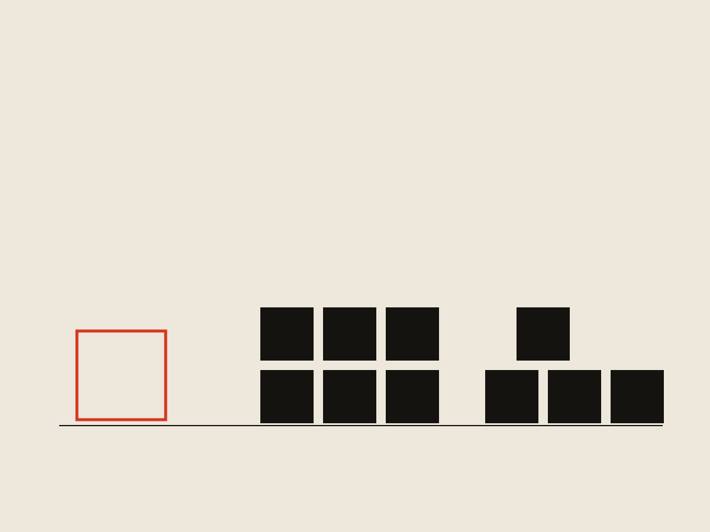
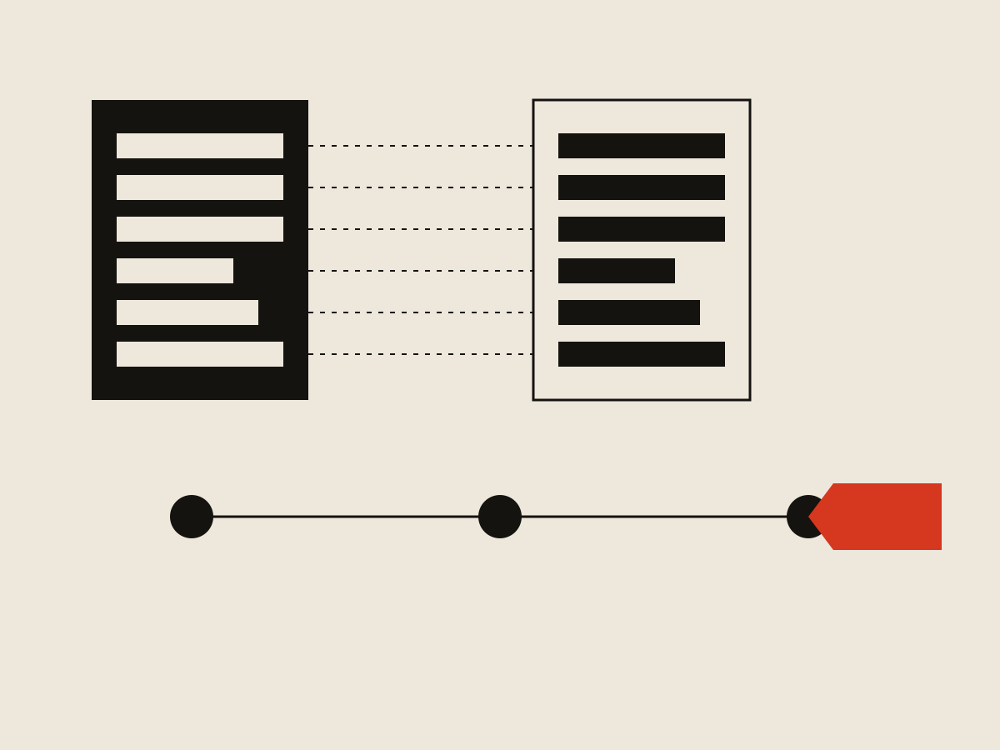

K-12 Job Spot
Why K-12 Job Spot's Easy Apply doesn't work like LinkedIn's

Context
K-12 Job Spot is the largest K-12-focused job board in the country. As part of its rebuild, one priority was connecting it to Recruiting & Hiring — Frontline's applicant tracking system, itself being rebuilt after nearly 20 years. Both systems belonged to Frontline, which gave us an option most competitors didn't have: designing the job-seeker and employer sides of the hiring flow as one connected system instead of two disconnected ones.
Problem
Repetitive data entry is one of the best-documented reasons job seekers abandon online applications — research, customer feedback, and my own experience applying to jobs all point the same direction. The employer side has the opposite constraint: many school districts can't accept a resume-only application. Depending on the state, they're required to collect very specific information up front — particular teaching certificates, detailed criminal-background questions, minimum years of experience, student-teaching history — none of which a resume reliably captures. On top of that, districts field high application volumes they need to screen quickly.
Product had written requirements before I got involved, and the direction was LinkedIn's Easy Apply model: less information up front, higher application volume. It wasn't a bad instinct — a known competitor was doing it, and matching a proven pattern is a reasonable default when you don't have better information. But nobody had tested whether our districts would accept that tradeoff.
Research
I ran interviews with 11 districts across a range of sizes — 4 large, 6 medium, 1 small — to test the LinkedIn model against our actual employer base, since the job-seeker side of the problem was already well understood.
The split was clean. The small district was fine trading a resume-only application for more applicants; they were already doing exactly that on LinkedIn. Every medium and large district said no. They receive high volumes per posting and need structured information up front to screen candidates — a resume upload wasn't enough, and for some, compliance requirements ruled it out entirely.
The result reframed the project. The obvious move, matching LinkedIn, would only work for the smallest slice of our customer base.

The alternative
I proposed a profile-based architecture instead. Application sections map to standardized job-seeker profile sections. Employers choose which categories they require; job seekers fill each section out once and reuse it across every application. As a profile fills in, jobs it already qualifies for get flagged "Easy Apply," dropping the process to three clicks — without ever asking employers to accept less data.
The initial reaction was enthusiastic; nobody was attached to the LinkedIn model for its own sake, they just hadn't had a reason to consider anything else. It still took a few follow-up conversations before stakeholders fully let go of it. The LinkedIn pattern was the mental default, and moving people off a default takes more than one good meeting, even when nobody actively opposes the alternative.
I built out the concept, user flows, diagrams, and interaction model, then worked with Product and Engineering to align on how profile data, employer requirements, and matching logic would operate together.

Outcome
The numbers that came in after launch backed the bet. Average time to complete an application dropped from 1 hour 20 minutes to 35 minutes across all users. Among people who applied to more than one job in a month, the average number of applications went from 4 to 9 — the job seekers who aren't chasing one specific role are applying to more than twice as many. On the employer side, districts are seeing a 23% increase in application volume on average.
It's now one of K-12 Job Spot's primary differentiators for job seekers: as far as we know, no job board at this scale runs Easy Apply this way. Sales, marketing, and leadership have all rallied behind it, and it tested well on both sides — districts got the structured data they needed, and job seekers were openly relieved not to re-enter the same information on every application.
The standardized profile architecture also opened up work that was never in the original scope — reporting, filtering, and candidate matching, all built on structured data that wouldn't exist if we'd gone the resume-only route.
The tradeoff
The profile model front-loads work onto a job seeker's first application. Easy Apply only kicks in once there's enough saved data to match a posting's requirements, so a brand-new user still does the manual entry up front. A resume parser takes the edge off — upload a resume and it pre-fills what it can — but the first application is never as light as the ones that follow. I'd make the same call again. A slightly heavier first application in exchange for a much lighter every-application-after is the right trade for a job board people come back to, and the jump in repeat applications is the evidence.
What it came down to
The leverage on this project came from the ownership structure, not the interface. LinkedIn trades applicant data for convenience because it doesn't own the employer's hiring system. Frontline owned both the job board and the ATS, which meant the tradeoff everyone treated as fixed was one we could actually design around. Spotting that, and confirming it with districts before we committed, was worth more than any single screen in the flow.